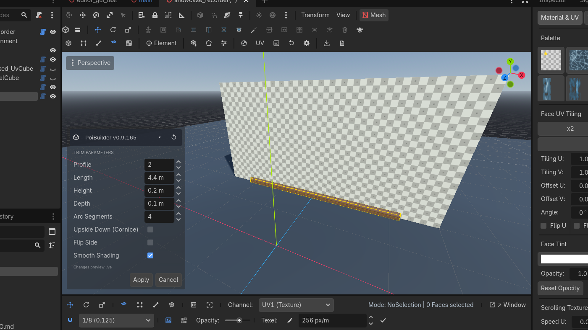
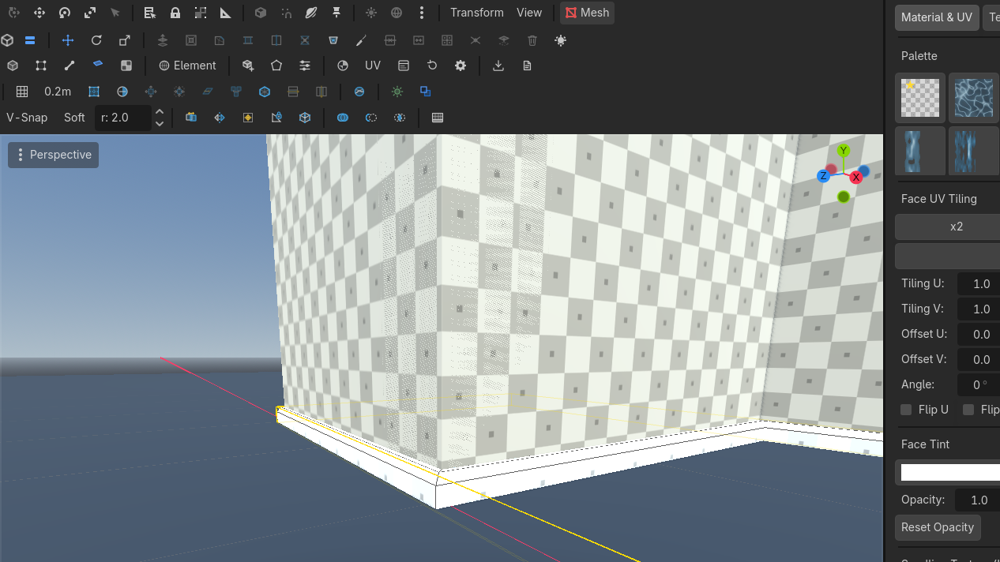

Trims
Skirting in one drag. Click walls for a mitred ring. Six profiles, cornice is the same strip upside down.
Trim (one drag)
New Shape → Trim. This one does not wait for a height click. It commits when you release the base.
- Start on the floor against a wall. The strip stands up, flush on the edge you started from.
- The longer side of the drag is the run length. Depth is never dragged — type it in the panel. The project remembers the last depth.
- Drawn on a wall, the strip lies flat with its bottom on the drag's lower edge.
Profiles (0–5): Flat, Chamfer, Round, Cove, Ogee, Stepped.
- Upside Down turns a skirting into its cornice twin.
- Flip Side mirrors across the wall.
- Arc Segments only affect Round, Cove, Ogee.

Use case — a skirting board
- New Shape → Trim. Press at the wall/floor corner, drag along the wall.
- Release. Switch profile to Ogee if you want a moulding; Upside Down for a cornice on the same wall.
- Apply. Repeat per wall, or use Trim Walls for the whole room.
Trim Walls (click faces)
Trim Walls
Enter applies · Esc cancels
Interactive wall-clicking tool that generates continuous mitred skirting and cornices.
✓ Wall faces to click
Row 4
Toolbar  Trim Walls
Trim Walls Row 4 · Trim Walls
Row 4 · Trim Walls Trim WallsEnter applies · Esc cancelsClick wall faces to sweep mitred trim along them (teal hover, amber chosen).Needs: Wall faces to click (row 4). Parameters appear immediately. Then click wall faces on any PoiBuilder mesh, in any order.
Trim WallsEnter applies · Esc cancelsClick wall faces to sweep mitred trim along them (teal hover, amber chosen).Needs: Wall faces to click (row 4). Parameters appear immediately. Then click wall faces on any PoiBuilder mesh, in any order.
- Hover: teal. Chosen: amber.
- Click again to drop a face. Backspace drops the last.
- Enter, double-click, or Apply commits. Esc cancels.
- Corners mitre at any angle. Overlapping walls carry trim on the visible run only.
- A closed perimeter becomes a ring. A doorway breaks the run at the jambs.
- Placement Bottom / Top + Offset: skirting on the slab even when wall cubes reach below it; cornice tucks under the ceiling.
- Result is one object. Edit Params stays live for the same walls — change profile, height, depth, offset without re-clicking.

Use case — dress a room
- Arm Trim Walls. Height 0.1 m, depth 0.05 m, profile Chamfer.
- Click the four walls. Enter. Skirting, mitred.
- Select the new trim, Edit Params, tick Upside Down, raise Offset if you want a dado. Do not flip a door-loop to Placement Top — see the limitation below.
- For a cornice on a simple, door-free run: Placement Top, or Upside Down on Bottom.
KNOWN LIMITATION. Switching a multi-segment loop that has openings (doors, arches, stairs) from Bottom to Top does not produce a contiguous cornice at the structure's top edge. Opening-adjacent runs sit at the arch/lintel. Use Bottom placement for loops with openings, or select only the simple faces for Top and place the rest by hand. The panel status line reports wall→run count; if a swap "does nothing", it produced no runs at the placement edge.
Keys: none bound. Arm from the toolbar.
Related: Shapes, First minutes.